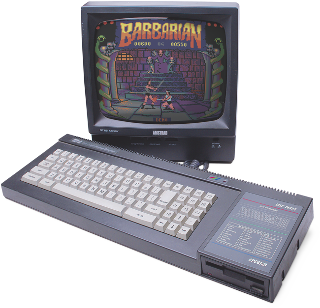

Je m'appelle Stéphan, expatrié de la région Grenobloise (département de l'Isère), je découvre encore la région Tourangelle depuis quelques petites années déjà.
Actuellement en quête d'emploi, notamment dans le domaine de l'informatique avec quelques bases acquises au fil du temps,
je me présente au CEFIM afin de participer à cette grande aventure Numérique !
Avec un BAC Scientifique option Maths (Oui un choix rebel en 1995) en poche, j'ai eu la joie de ne pas savoir quoi faire par la suite...
Je m'essaya donc à de moultes découvertes de 1ère années diverses et variées.
Passant de la Physique, aux Maths, à la Médecine, avec un soupçon de Pharmacie et une pointe de Biologie, au final je me suis tourné vers l'expérience de la vie active.
J'ai travaillé dans plein de milieux différents, cela m'a permis d'avoir une première approche du monde de l'entreprise.
J'ai pu aussi voyager !! Un ersatz d'Alaska ayant mis en rayon des tonnes de surgelés sans gants (merci Carrefour!).
Autant que la chaleur des Tropiques tel un grilladin devant sa belle plaque chauffante du Quick !
Et même un tour du Monde à dos de scooter dans le trafic Parisien, d'Ambassade en Ambassade aidant les personnes qui rêvaient de voyages ...
Depuis l'âge de 10 ans, j'ai pu entrer en contact avec une machine plate qui avait un logo dessus : SHARP (MZ-700)... WAW!
On m'a dit que c'était un ordinateur... WAW!.
MAIS après de longs et interminables temps d'attente du %#&$% chargement de la "cassette", je m'en suis délaissé.
A cet âge on s'attend plus à des choses qui pétillent ou explosent comme un feu d'artifice...
C'est avec la venue de l'Amstrad CPC 6128 et sa diquette magique de 3" que l'intêret de la machine fit son office avec les jeux !
L'avénement fut sans nul doute l'arrivée de l'Amiga 500, grâce à cette "amie" j'ai pris goût à modifier des paramètres de démarrage et à l'Algorithme !
J'ai appris notamment l'Anglais grâce à des jeux d'aventures tels que The Colonel's Bequest, Conquest of Camelot, Leisure suit Larry... bref tout les "SIERRA"
(Il fallait taper au clavier les "mots" pour se déplacer, faire des actions..)
J'ai même compris avant de savoir conduire comment bien prendre un virage grâce à Vroom !! Oué
Et donc au fil du temps, j'ai passé, enfin, squatté les ordinateurs de la fac de Maths où j'ai pu voir et expérimenter les débuts d'internet !
Depuis je suis toujours en contact avec le monde du Numérique!
Ce parcours m'a amené aux journées portes ouvertes du CEFIM où j'ai pu rencontrer Mr Richard Rondeau,
qui m'a enthousiasmé sur vos formations et je me retrouve à taper ces mots pour postuler ici !
Un MZ-700 de SHARP (hein ?! .. si si)
Amstrad CPC 6128 ("The" disquette 3 pouces)
Mes débuts dans l'algorithme.. Le workbench 1.3 de l'AMIGA 500
*Coup de coeur*
Evidemment on pense à la révolution du jeu grâce aux consoles
ici une classique SEGA Master sytem
Hobbit
Parce qu'on est tous "Humains" et qu'on ressent ce besoin de se divertir !
Pendant mes "années d'études" j'ai pu apprendre les joies de sauter dans les airs en pratiquant pendant une bonne dizaine d'années le Volley-ball et Beach volley !
Donc, on peut dire que j'ai une forte sympathie pour le milieu sportif et le dépassement de soi.
Quelques incursions dans des formations de Médecine Chinoise m'ont aussi fait grandement apprécier leur philosophie de vie, tout comme le respect du Corps Humain !
En tant qu'ancien Geek de World of Warcraft (Eh oué, j'ai farmé comme un "chinois" ),
je m'accorde quelques sessions d'Hearthstone (jeux de cartes tiré du milieu de WoW justement)
Un style particulier de jeux ? Oui, tendance aux jeux de réflexion, stratégie, tour par tour, simulation*